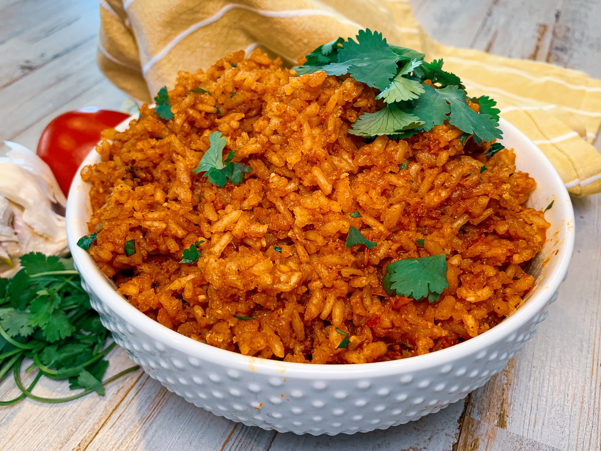

Mexican Rice

Dish Description:
This Mexican rice recipe makes a wonderful restaurant-style side dish for any Mexican dinner.
Prep Time: 5 mins
Cook Time: 25 mins
Total Time: 30 mins
Servings: 4
Ingredients:
- 3 tablespoons vegetable oil
- 1 cup uncooked long-grain rice
- 1 teaspoon garlic salt
- ½ teaspoon ground cumin
- ¼ cup chopped onion
- 2 cups chicken broth
- ½ cup tomato sauce
Directions:
- Step 1
- Heat oil in a large saucepan over medium heat.
- Add rice and season with garlic salt and cumin; cook, stirring constantly, until puffed and golden.
- Step 2
- Add onion; cook and stir until onion has softened.
- Stir in chicken broth and tomato sauce; bring to a boil.
- Reduce heat to low, cover, and simmer for 20 to 25 minutes. Fluff rice with a fork.